COAHUILA
Coahuila, oficialmente Estado Libre y Soberano de Coahuila de Zaragoza, es uno de los treinta y un estados que, junto con la Ciudad de México, conforman los Estados Unidos Mexicanos. Su capital y ciudad más poblada es Saltillo. Está dividido en treinta y ocho municipios. Además de Saltillo, otras localidades importantes son: Torreón, Monclova, Piedras Negras y Ciudad Acuña.
Está ubicado en la región noreste del país, limitando al norte con el río Bravo que lo separa de Estados Unidos, al este con Nuevo León, al sur con Zacatecas y San Luis Potosí, y al oeste con Durango y Chihuahua. Con 151 563 km² es el tercer estado más extenso —por detrás de Chihuahua y Sonora— y con 20.16 hab/km², el séptimo menos densamente poblado, por delante de Zacatecas, Sonora, Campeche, Chihuahua, Durango y Baja California Sur. Fue fundado el 25 de junio de 1824. Formó parte de la República del Río Grande en el año de 1840.
TOPONIMIA
Existen diversas teorías en relación con el origen del nombre de estado. Por ejemplo, Vito Alessio Robles, militar e historiador de Coahuila, aseveraba que el nombre provenía de la conjunción de las locuciones "koatl" y "wilana" que en la lengua náhuatl (hablada en ciertas partes del estado después de la Conquista) se podía interpretar como "lugar donde se arrastran las serpientes".
Por otro lado, la Secretaría de Educación Pública de México, más parcial a la palabra "wilotl" con que en náhuatl se designa a las palomas, suscribía como significado la frase "serpiente que vuela". También podría venir del participio del verbo náhuatl "kwawia", que significa apartar.
Finalmente, de acuerdo con el historiador Tomás Zepeda, el nombre del estado (en náhuatl, Kwawillan) provino de la palabra "kwawitl", que significa árbol y un sufijo locativo de uso frecuente que implica abundancia "-tlan", que juntos significan "lugar donde abundan los árboles".
Esta última acepción es la que se favorece hoy en día, de tal manera que en el escudo de la entidad figura en el mantel inferior una arboleda, representando los frondosos nocedales de la ciudad de Monclova, Coahuila. Actualmente el nombre oficial es "Estado Libre y Soberano de Coahuila de Zaragoza", en honor al General Ignacio Zaragoza, nacido en la entidad.

HISTORIA
CONQUISTA Y COLONIZACIÓN
El año de 1521 marcó el inicio de la conquista de México con la llegada de miles de inmigrantes españoles, que se dispersaron por toda la Nueva España. Comisionado por el gobernador de la Nueva Vizcaya y al frente de una partida de soldados, Alberto del Canto fundó la villa de Santiago del Saltillo en 1577. Una década después, ya solo quedaban 20 españoles en Saltillo debido a los constantes ataques de los chichimecas.
A lo que hoy es Monclova, había penetrado en 1583 la trágica expedición de don Luis de Carvajal y de la Cueva, quien a orillas del río levantó un asentamiento con el nombre de Nueva Almadén. Hasta ese momento el avance colonizador había sido progresivo y sistemático. Sin embargo, la oleada colonizadora se detuvo durante casi un siglo y ni siquiera esta primera fundación, la de Almadén, logró permanecer. Poco después de la llegada de Carvajal a la hoy Monclova, la población quedó abandonada por el constante acoso de los indígenas.
En las siguientes décadas fracasaron no menos de nueve intentos de repoblar el sitio. Abundaban los grupos de indios bárbaros divididos en numerosas parcialidades o rancherías. Así lo consignaron los cronistas españoles que llegarían más tarde. El más notable de todos los misioneros en el centro y norte de Coahuila fue fray Juan Larios, franciscano de profunda fe, sincero amor apostólico y, sin duda, gran fortaleza física, logró con su catecismo y su devoción lo que no pudieron personajes que usaron la fuerza y las armas: establecer al norte de Monclova las primeras poblaciones de carácter permanente.
En julio de 1591, 71 familias tlaxcaltecas y 16 solteros llegaron a Saltillo y el pueblo de San Esteban de Nueva Tlaxcala fue fundado en el lado occidental del asentamiento español y separado de los españoles solo por un canal de riego. Los neotlaxcaltecas evitaron tener un contacto muy cercano con los colonos españoles, aunque algunos, de hecho, impartieron clases de educación a hijos de empresarios.
Años más tarde, en 1598, el capitán Antón Martín de Zapata y el jesuita Agustín de Espinoza fundaron oficialmente Santa María de las Parras, hoy Parras de la Fuente, junto con colonizadores neotlaxcaltecas. Las dos poblaciones se hallarían hasta poco más de un siglo después bajo la jurisdicción del gobierno de la Nueva Vizcaya. En solo 56 años la labor de exploración, conquista o fundación se había desplazado al norte (desde México a Saltillo) 850 kilómetros.
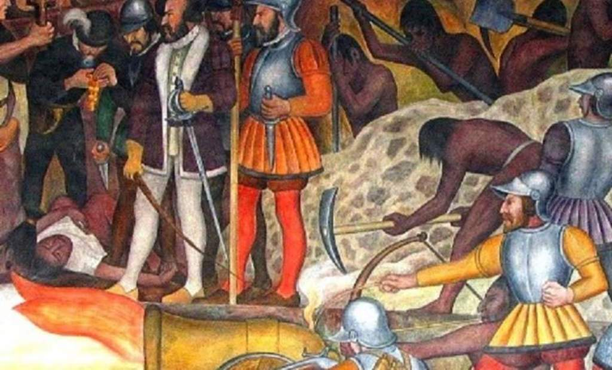
EXPANSIÓN VIRREINAL
A fines de diciembre de 1674, los franciscanos salieron de lo que alguna vez fuera Nueva Almadén con destino al norte. Un mes después se les unió el Justicia Mayor de la villa del Saltillo, Francisco de Elizondo con 30 hombres, cuyos apellidos quedaron desde entonces ligados a la historia de Coahuila: Diego Ramón, Fernando del Bosque, Diego Luis Sánchez Navarro, Ambrosio de Cepeda, Rodrigo de Morales y Juan de Aguirre. En el punto de reunión fundaron la misión de San Ildefonso de la Paz, el 28 de enero de 1675.
La región se estabilizó entonces en las décadas siguientes, en particular bajo el gobierno de Gregorio de Salinas Varona, entre 1692 y 1705, quien reforzó el control sobre los indios multiplicando las reducciones y asentó la presencia de la Iglesia.
En el año 1677, San Esteban reclamó la tierra guachichil como propia, declarando a los descendientes de los guachichiles como "tlaxcaltecas puros". La población de San Estaban era entonces de 1750 habitantes.
Los neotlaxcaltecas reclamaron y se esforzarían por mantener su pureza étnica, tanto por orgullo como por el deseo de mantener los privilegios que se les otorgaron en 1591. Se casaron principalmente dentro de su propia comunidad y conservaron su idioma nativo, el náhuatl, como lo demuestra la gran cantidad de documentos náhuatl, especialmente testamentos, conservados de los siglos XVII y XVIII.
Una creciente población no tlaxcalteca del noreste de México, la hostilidad indígena, la sequía y las enfermedades comenzaron a erosionar la independencia de San Estaban en la década de 1780 y los años posteriores. La reorganización del gobierno virreinal en la década de 1780 resultó en que San Esteban perdiera gran parte de su autonomía y derecho de autogobierno.
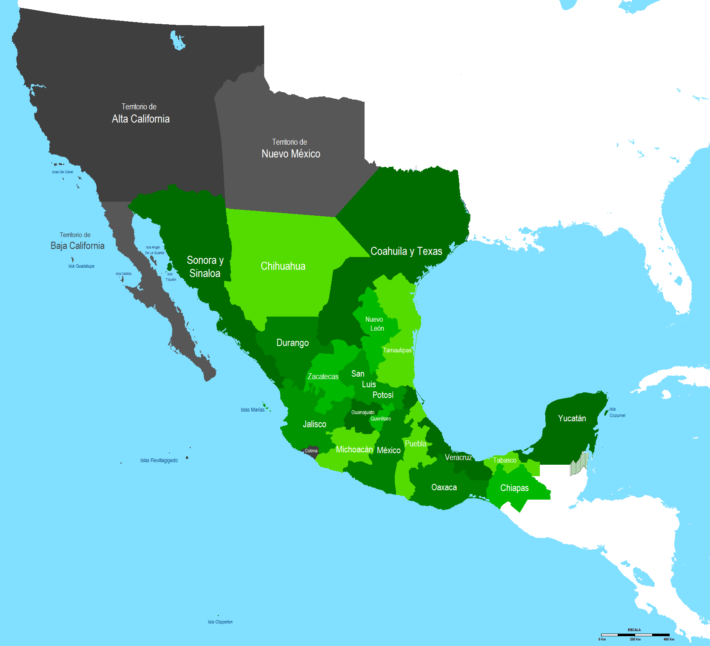
LA INDEPENDENCIA
A mediados de septiembre de 1810, Mariano Jiménez solicitó y obtuvo de Allende la autorización para extender el movimiento insurgente a las provincias del norte. Las fuerzas de Coahuila, que entre soldados y voluntarios sumaban no más de 700 efectivos al mando del gobernador don Antonio Cordero y Bustamante, se encontraron el 7 de enero de 1811 en la hacienda de Agua nueva frente a los 8000 hombres de Jiménez. Los soldados realistas, desalentados ante la superioridad de su enemigo, rindieron sus armas y corrieron a unirse a las filas insurgentes. Al día siguiente, Jiménez y la enorme columna que lo acompañaba, hicieron su entrada a Saltillo.
Desde esta ciudad, Jiménez había mantenido comunicación con los jefes Hidalgo y Allende, que se hallaban en Guadalajara. El 17 de enero, después de que los insurgentes sufrieron su peor derrota en la desastrosa batalla de Puente de Calderón, lo que quedaba del ejército se dirigió al norte a reunirse con Jiménez. La entrada de los insurgentes a Saltillo el 24 de febrero de 1811 fue motivo de celebraciones. Entretanto, con refuerzos recibidos desde España, el virrey había ordenado una ofensiva de tres ejércitos que avanzarían coordinadamente desde diversos puntos sobre Saltillo. Ante estos desplazamientos, los jefes insurgentes tomaron la determinación de dirigirse a Texas, con la idea de internarse en Estados Unidos.
Un día después de la salida de Hidalgo y los suyos de Saltillo, un grupo de contrarrevolucionarios apresó en Monclova al gobernador insurgente Pedro Aranda y ocupó la ciudad. Los contrarrevolucionarios, con una fuerza de 492 hombres al mando de Ignacio Elizondo y Tomás Flores, habían decidido detener el movimiento libertario.
Mientras la columna insurgente avanzaba lentamente rumbo al norte, los hombres de Elizondo y Flores se instalaron en Acatita de Baján, paso obligado en el camino de Saltillo a Monclova. Situaron el campamento principal tras una pequeña loma donde el camino hacia una curva rumbo al oriente y descendía a una planicie ocultada por el mismo cerro.
A medida que transcurría la jornada cayeron en poder de los contrarrevolucionarios los aislados grupos rebeldes. Entre cuatro y cinco de la tarde, más de 600 insurgentes, entre ellos los principales jefes, habían sido capturados. Bajo una guardia de cuarenta soldados se envió a Monclova la primera partida de 400 presos.
El día 22 entró a Monclova el grupo de prisioneros. Unos fueron recluidos en el Hospital Militar, otros en la capilla de La Purísima y el resto en el cuartel de las fuerzas presidiales. Temiendo ataques de los insurrectos, las autoridades dispusieron el traslado de los principales jefes a Chihuahua. La columna de soldados y prisioneros salió de Monclova la madrugada del 24 de marzo.
Eran 28 prisioneros, entre los que se encontraban los principales caudillos: Hidalgo, Allende, Juan Aldama, Jiménez, Abasolo, Pedro Aranda, Manuel Santamaría, Francisco Lanzagorta y otros importantes oficiales, además de cuatro clérigos y seis frailes.
En Monclova fusilaron al licenciado Ignacio Aldama, fray Juan de Salazar y Juan Bautista Casas. Los tres habían sido capturados en San Antonio de Béjar (hoy San Antonio, Texas). Además de ellos, los realistas ejecutaron a numerosos insurgentes.
Los únicos dos coahuilenses trasladados a Chihuahua fueron José Andrés Molano y José Plácido Monzón. El primero fue condenado a destierro con confiscación de bienes y el segundo murió fusilado el 7 de junio de 1811.
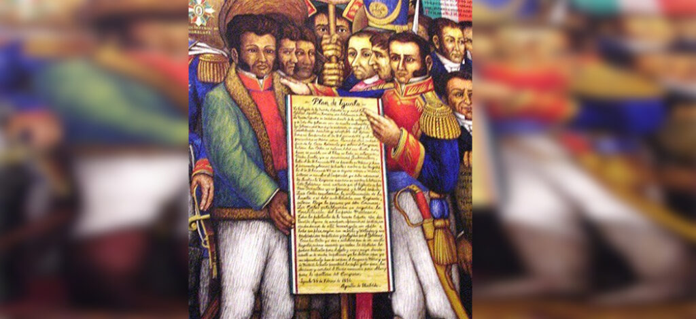
CONFLICTOS CON TEXAS
Desde finales del siglo xviii y principios del XIX, muchos personajes de la época advirtieron el enorme riesgo en que se hallaba el territorio de Texas. Hacia 1810 Texas contaba con no más de cuatro mil habitantes, la mayoría de origen mexicano. Diez años después, su número se calculaba en seis mil, de los cuales la mitad se hallaba concentrada en San Antonio. Ese año de 1820, aún bajo el régimen virreinal, se trató de impulsar la colonización. Las únicas condiciones para recibir tierras eran que los colonos profesaran la religión católica, fueran de buenas costumbres y juraran lealtad al rey.
Aprovechando esta política, Moses Austin, un estadounidense que había residido en el vecino territorio de la Luisiana, cuando este pertenecía a España, solicitó y obtuvo de las autoridades virreinales la autorización para establecer 300 colonos angloamericanos en Texas. Sin embargo, no le fue posible cumplir con su cometido. Murió en 1821 antes de cristalizar su proyecto. Tiempo después, su hijo Stephen logró que le fuera reconfirmada la concesión por el imperio de Iturbide, y más tarde por la recién formada República. Stephen Austin logró establecer estas primeras 300 familias. La concesión se mantuvo y en pocos años la migración era un alud. Para 1830 se calculaba en 20 000 el número de habitantes de Texas.
La Constitución federalista de 1824 les había confirmado su reconocimiento, y Texas mismo pasó a formar parte del estado de Coahuila. Después de 1824 y proclamada la Constitución, se iniciaron los conflictos por el poder. Entre ese año y 1833, cuando llegó Antonio López de Santa Anna, habían pasado siete presidentes; solo el primero de ellos, Guadalupe Victoria, completó los cuatro años de su administración. Santa Anna, más que simpatizar con el centralismo, aprovechó sus doctrinas para ejercer la dictadura y por lo pronto abolió la Constitución de 1824 y regresó a los estados (libres y soberanos) a su antigua calidad de departamentos, con total dependencia del Ejecutivo nacional. En Coahuila y Texas, al gobernador, el federalista Agustín Viesca, se le obligó a renunciar y fue encarcelado. Este giro de la política nacional causó una enorme alarma en la población de colonos en Texas.
En 1836 los texanos proclamaron finalmente su independencia de México. Para intentar evitarlo, Santa Anna se dirigió a Texas con un enorme ejército. La guarnición en la Misión del Álamo fue aniquilada después de una defensa famosa. Otra guarnición acantonada en Goliad sufrió la misma suerte. Empero, el general texano Sam Houston mantuvo reunido a un pequeño ejército, y en 1836 derrotó al ejército mexicano en San Jacinto. Santa Anna fue apresado y conducido a la bahía de Galveston, en donde se le obligó a firmar los Tratados de Velasco, el 14 de mayo de 1836. En el segundo Tratado de Velasco era en el que se reconocía la independencia de Texas, que a poco de conquistar su independencia inició gestiones para anexarse como estado a la Unión Americana. El 21 de junio de 1845 Texas votó su anexión a los Estados Unidos, y con ello quedó abierto el camino hacia la guerra entre los dos países.
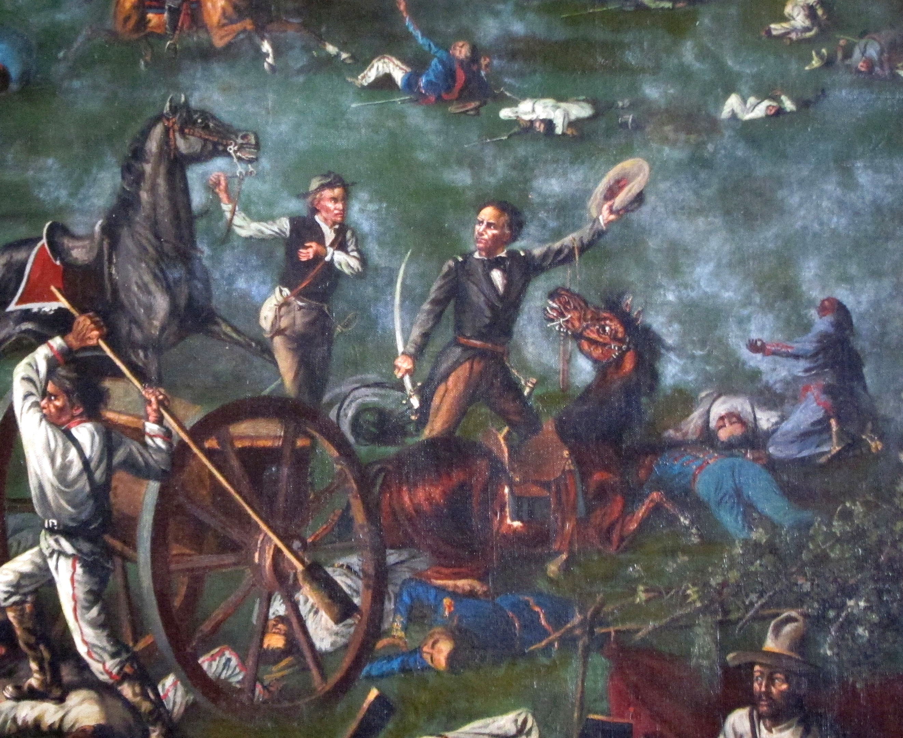
GEOGRAFÍA
LÍMITES
Coahuila de Zaragoza está localizado en la parte central del Norte de México. Su extensión territorial es de 151 571 kilómetros cuadrados y representa el 7.7 % del área total del país. Limita al norte con el estado de Texas, a través del río Bravo; al sur con Zacatecas; en un vértice del sureste con San Luis Potosí; al suroeste con Durango; al este con Nuevo León; y al oeste con Chihuahua. Tiene 531 km de frontera con los Estados Unidos. Población Total: Según el Conteo 2015 del INEGI, Coahuila tiene 2,954,915 habitantes.
CLIMA
El clima es generalmente seco y semicálido a cálido extremoso en gran parte del estado de Coahuila, con algunas variantes a través de las regiones del estado.
En la Región Sureste el clima es caluroso, en primavera y verano generalmente en Saltillo, Arteaga y más, la estación lluviosa es en julio y agosto, en invierno el tiempo es frío y brumoso. En la Región Lagunera el tiempo es caliente en primavera y verano, caluroso y seco por el otoño y con los inviernos relativamente apacibles, eventualmente fríos. En la Región Centro y Carbonífera, el tiempo es caliente en primavera y la temperatura en verano es muy alta. En verano hay lluvias que pueden ser intensas. Los inviernos son fríos. En la Región Norte el clima es caliente en primavera y verano y frío en invierno, con la lluvias en la región en julio y agosto. Las nevadas son frecuentes en la zona norte del estado, en las sierras de Múzquiz, y en la sierra de Arteaga en el sureste del estado durante la temporada invernal.
En el noreste, las condiciones pueden estar favorables para el desarrollo de tiempo severo en la primavera, incluso la posibilidad de tornados.
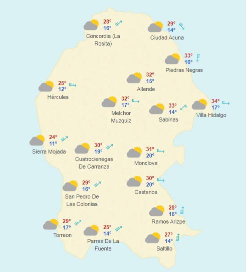
FLORA
La vegetación de Coahuila es muy variada. Su desarrollo depende del clima, tipo de suelo, altura sobre el nivel del mar, y precipitación pluvial. En las partes altas de la sierra abundan los pinos, pinabetes, encinos y cedros. En las partes bajas hay mezquites, huizaches, yucas, nopales, magueyes, cactus y lechuguillas.
Otras plantas que crecen en el estado son: orégano, árnica, albahaca, cedro, nogal, fresno, álamo, peyote, biznaga, cenizo, sábila, mora, jujube, durazno, aguacate, membrillo, higuera, mispero, chile piquín, tuna, granado, tejocote, chile pirán, gobernadora...
Predominan los matorrales en más de 80 % en las extensas llanuras y la zona desértica del Bolsón de Mapimí. Hacia el noroeste, los matorrales se mezclan con pastizales. En menor proporción, en la Sierra Madre Oriental y en elevaciones de origen volcánico se encuentran bosques de coníferas y encinos. La agricultura ocupa 5 % del territorio y se localiza, sobre todo, en la Comarca Lagunera.
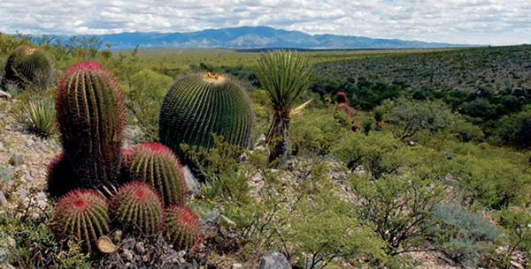
FAUNA
La fauna varía dependiendo de la región natural. A través de las sierras, cañadas y llanos del estado habitan distintas especies. En matorrales: tlalcoyote, gato montés, zorra del desierto, rata canguro, cachorrito de Cuatro Ciénegas, lagarto-escorpión de Lugo y perrito de las praderas. En los pastizales: borrego cimarrón, ciervo rojo, puma y armadillo. En el bosque: murciélago, oso negro, musaraña y zorrillo. En los ríos: mojarra y nutria. Animales en peligro de extinción: berrendo, bisonte americano, topo, carpa, puerco espín, codorniz y coyote.
MAÍFEROS
Los mamíferos más comunes del estado son: liebre, ardilla, venado cola blanca, oso negro, coyote, puma, tejón, gato montés, murciélago, rata, tlacuache, conejo, comadreja, zorrillo, berrendo, mapache y coatí.
AVES
Solo en La Zona Sujeta a Conservación Ecológica Sierra de Zapalinamé se encuentran alrededor de 237 especies diferentes de aves entre migratorias y residentes. Pero las más comunes del estado son: lechuza, halcón, gavilán, cuervo, pato, ganso, grulla, zopilote, águila, tordo, cenzontle, cardenal, calandria, golondrina, gorrión, correcaminos, paloma, codorniz, aura, alondra y el guajolote.
Las aves de Coahuila son normalmente migratorias y otras residentes son algunas que son residentes pero son muy comunes en su mayoría casi no hay especies (aves) endémicas en Coahuila de Zaragoza porque su diversidad de aves no es muy grande y son más las especies migratorias que vienen en verano a la sierra madre oriental por ejemplo la cotorra serrana, que está en peligro de extinción y viene a Sierra de Zapalinamé en el municipio de Saltillo, Coahuila y al cañón de San Lorenzo.
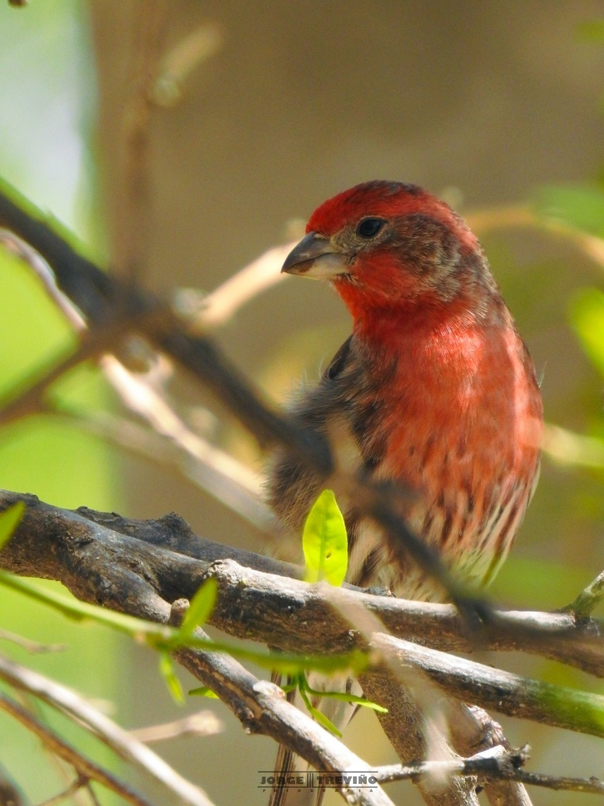
REPTILES
Los reptiles más comunes del estado son: lagartija, tortuga, víbora de cascabel.
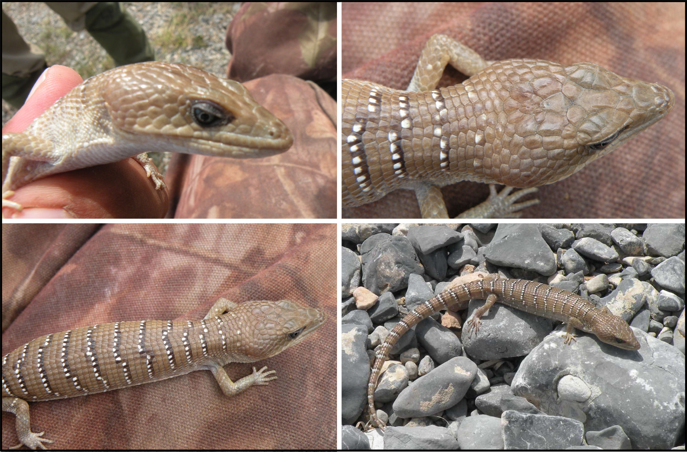
GOBIERNO
El estado se divide en 38 municipios. Su capital es Saltillo. El Gobierno del Estado se divide en tres poderes: el Ejecutivo, representado por el Gobernador; el Legislativo, por el Congreso Local; y el Judicial, por el Tribunal Superior de Justicia de Coahuila. El actual gobernador es Miguel Riquelme Solís.
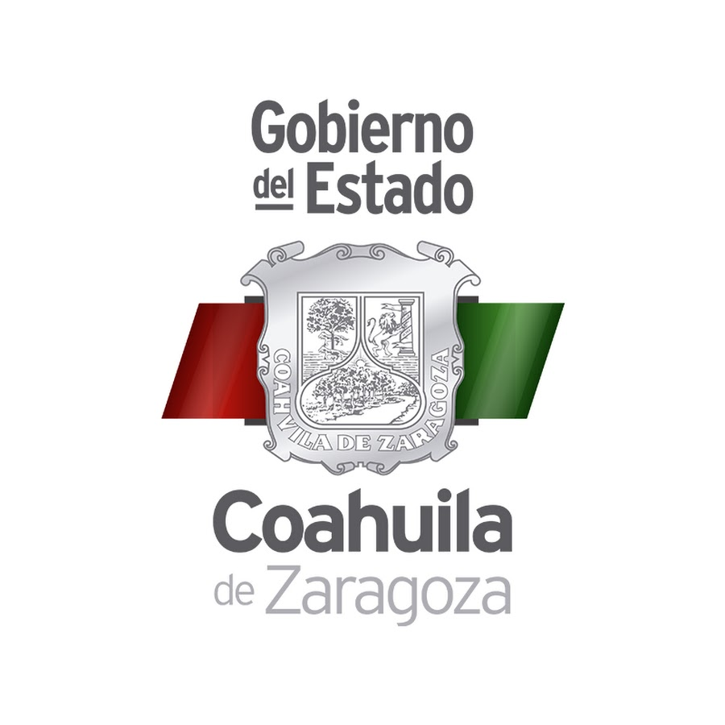
TURISMO
Coahuila no es un estado muy turístico si se compara con otras entidades del país, pero aun así cuenta con diversos atractivos, sobre todo relacionados con actividades al aire libre en el clima semidesértico.
CUATROCIÉNEGAS
Cuenta con la Reserva de la Biósfera Cuatro Ciénegas. Ahí se pueden encontrar alrededor de 150 plantas y especies de animales diferentes endémicas.
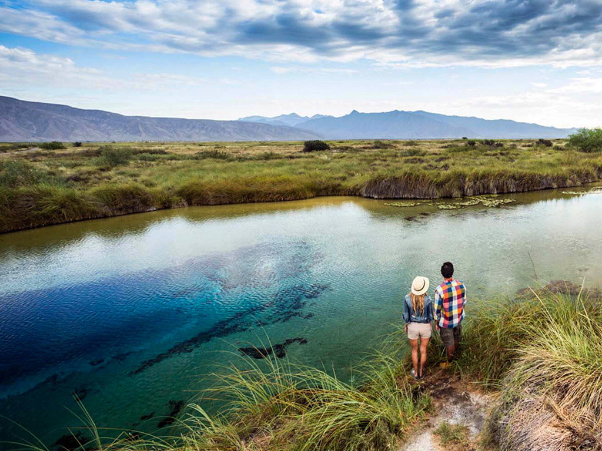
SALTILLO
Diversos atractivos turísticos incluyen sitios y edificios históricos como la Plaza de Armas, el Palacio de Gobierno y la Catedral de Santiago. También destaca el Museo del Desierto.
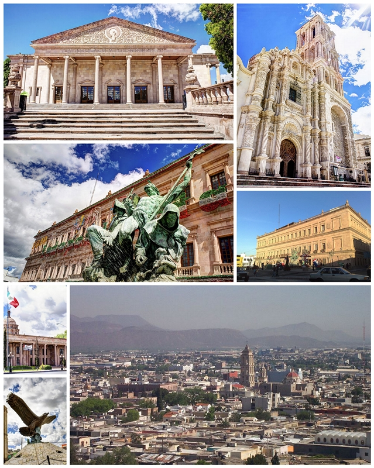
TORREÓN
La ciudad de Torreón tiene como atractivos principales el Cristo de las Noas, al cual se puede llegar usando el primer teleférico del estado; y el Estadio Corona, sede del equipo de fútbol Santos Laguna.
PARRAS DE LA FUENTE
Parras destaca principalmente por sus nogaleras, su arquitectura antigua y sus viñedos.
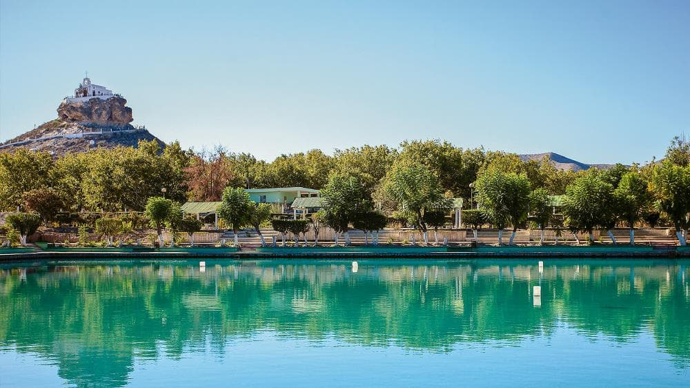
POBLACIÓN
Según las cifras que arrojó la "Encuesta Intercensal 2020" realizada por el Instituto Nacional de Estadística y Geografía (INEGI), el estado de Coahuila de Zaragoza cuenta con un total de 3,146,771 habitantes al año 2020, de dicha cantidad, el 49.6912% (1,563,669) son hombres y el 50.3088% (1,583,102) son mujeres. La tasa de crecimiento anual para la entidad durante el período 2010-2020 fue del 1.4%.
Saltillo y Torreón son los municipios con mayor población; juntos concentran el 50.3% de residentes en el estado. Casi todos los municipios muestran crecimiento en su población en el último quinquenio; sin embargo, este crecimiento muestra diferencias entre cada uno de ellos. De los 32 municipios del estado que tienen mayor población destacan Ramos Arizpe, Saltillo y Nava con los valores más elevados en las tasas de crecimiento; por el contrario, con tasas negativas se encuentran Progreso y Parras.
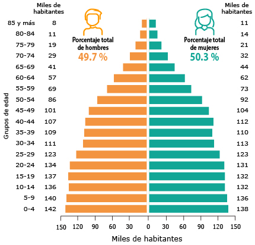
ZONAS METROPOLITANAS
En Coahuila existen 4 Zonas Metropolitanas según la clasificación del INEGI. Población obtenida según los resultados del Censo de Población y Vivienda de 2020.
La ZM de La Laguna tiene 1,434,283 habitantes en los municipios de Torreón, Matamoros, Francisco I. Madero, Gómez Palacio y Lerdo.
La ZM de Saltillo tiene 1,031,779 habitantes en los municipios de Saltillo, Ramos Arizpe y Arteaga.
La ZM de Monclova, tiene 374,247 habitantes en los municipios de Monclova, Castaños, Frontera y San Buenaventura.
La ZM de Piedras Negras tiene 209,456 habitantes en los municipios de Piedras Negras y Nava.
GASTRONOMÍA
La gastronomía coahuilense son los alimentos, técnica culinarias y platos típicos del estado de Coahuila, en Aridoamérica y en el Noreste de México.
Como en todo el país, los ingredientes esenciales de su dieta son el maíz, el chile y el frijol. Coahuila también es famoso por sus carnes frescas: cabrito, carnero y ternera. Algunos platos típicos de Coahuila son el asado de puerco, la fritada norteña, la machaca, el cabrito salteado o al pastor, los burritos o los tamales «de dedo». En Coahuila, concretamente en Piedras Negras, nacieron los famosos nachos. En cuanto a chiles, se utilizan mucho el guajillo, el pasilla y cascabel.
Coahuila también tiene mucha tradición vinícola, produciendo vino, brandy y otros aguardientes ya desde el siglo XVI.
GOBERNADOR
Miguel Ángel Riquelme Solís (Torreón, Coahuila de Zaragoza; 18 de septiembre de 1970) es un ingeniero y político mexicano, miembro del Partido Revolucionario Institucional, exdiputado local y federal, exalcalde de Torreón y actual Gobernador de Coahuila.
BIOGRAFÍA
Ingeniero en Sistemas Computacionales del Instituto Tecnológico de La Laguna. Está casado con Marcela Gorgón Carrillo y es padre de dos hijas.
Fue secretario de Desarrollo Social, secretario de Desarrollo Regional en Coahuila, diputado local en la LVII Legislatura del Congreso del Estado de Coahuila y diputado federal. También se desempeñó como secretario de Gobierno del Estado de Coahuila. Fue alcalde de Torreón, su localidad natal, de 2014 a 2016, cuando solicitó licencia para separarse del cargo y ser el candidato del PRI a Gobernador de Coahuila durante las elecciones de 2017.